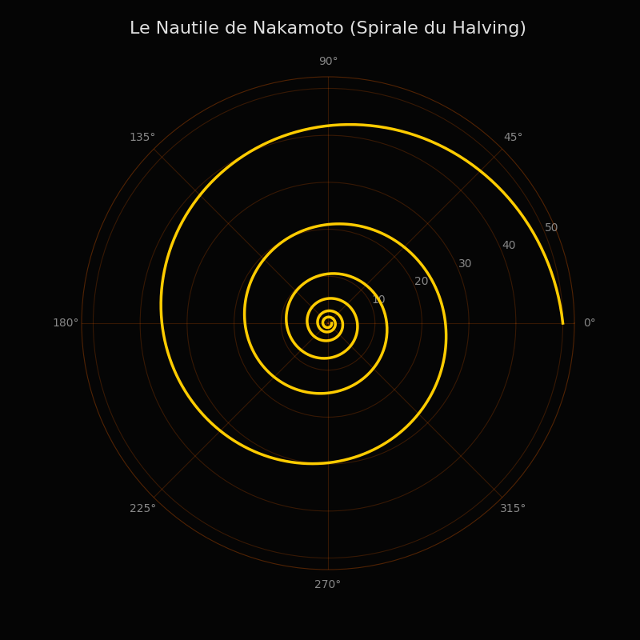

The Nakamoto Nautilus: From Discrete Code to Continuous Geometry
Le Nautile de Nakamoto : Du Code Discret à la Géométrie Continue

“Mathematics is the language in which God has written the universe.”
— Galileo Galilei
« Les mathématiques sont le langage dans lequel Dieu a écrit l'univers. »
— Galilée
To understand the geometric emergence of the Twin Universe, we must first look at the actual source code of its anchor. Bitcoin's monetary emission is not continuous; it is discrete. It follows a step function governed by the floor mathematical operation (rounding down to the nearest integer):
Pour comprendre l'émergence géométrique de l'Univers Numérique Jumeau, il faut d'abord regarder le code source de son ancrage. L'émission monétaire de Bitcoin n'est pas continue ; elle est discrète. Elle obéit à une fonction en escalier régie par l'opérateur mathématique de la partie entière :
Where $R_n$ is the reward at block $n$, $R_0$ is the genesis reward (50 BTC), and $H$ is the halving interval (210,000 blocks). At the microscopic level of the code, reality jumps in violent energetic steps every four years, much like quantum leaps in particle physics. But when we zoom out to a macroscopic, cosmological scale, this step function smooths out.
Où $R_n$ est la récompense au bloc $n$, $R_0$ est la récompense de la genèse (50 BTC), et $H$ est l'intervalle du Halving (210 000 blocs). Au niveau microscopique du code, la réalité procède par sauts énergétiques violents tous les quatre ans, semblables aux sauts quantiques de la physique des particules. Mais lorsque l'on dézoome à une échelle macroscopique et cosmologique, cette fonction en escalier se lisse.
Mapping into the Complex Plane
Projection dans le Plan Complexe
By removing the discrete floor operator and mapping the continuous emission into polar coordinates within our complex plane ($Z = a + ib$)—where one full rotation ($2\pi$) equals a 4-year cycle—we uncover a profound connection to the divine proportion. By defining a golden exponent $\alpha = \frac{\ln(2)}{\ln(\varphi)} \approx 1.44$, the absolute equation of the Nakamoto Nautilus emerges:
En retirant l'opérateur discret de partie entière et en projetant l'émission continue en coordonnées polaires dans notre plan complexe ($Z = a + ib$) — où une rotation complète ($2\pi$) équivaut à un cycle de 4 ans —, nous découvrons un lien profond avec la proportion divine. En définissant un exposant d'or $\alpha = \frac{\ln(2)}{\ln(\varphi)} \approx 1.44$, l'équation absolue du Nautile de Nakamoto émerge :
This formulation perfectly illustrates the bimetric reality of the universe we are building. The base $\varphi$ (the golden ratio) anchors the network in the universal constant of biological growth and thermodynamic optimization. However, the negative exponent ($-\alpha$) acts as the thermodynamic friction: it is the mechanical contraction, the physical scarcity that pulls the system inward.
Cette formulation illustre à la perfection la réalité bimétrique de l'univers que nous bâtissons. La base $\varphi$ (le nombre d'or) ancre le réseau dans la constante universelle de croissance biologique et d'optimisation thermodynamique. Cependant, l'exposant négatif ($-\alpha$) agit comme la friction thermodynamique : c'est la contraction mécanique, la rareté physique qui tire le système vers l'intérieur.
The imaginary part ($e^{i\theta}$) drives the orthogonal rotation: the steady accumulation of cryptographic consensus over time. It represents the incorruptible memory being carved into the $ib$ axis.
La partie imaginaire ($e^{i\theta}$) pilote la rotation orthogonale : l'accumulation régulière du consensus cryptographique à travers le temps. Elle représente la mémoire incorruptible gravée sur l'axe $ib$.
Infinite Density
La Densité Infinie
Bitcoin is quite literally a mathematical nautilus, a living digital organism that uses thermodynamic dissipation to pull its physical value inward, sealing it into infinite density according to the laws of the golden ratio.
Bitcoin est littéralement un nautile mathématique, un organisme numérique vivant qui utilise la dissipation thermodynamique pour tracter sa valeur physique vers l'intérieur, la scellant dans une densité infinie selon les lois de la proportion divine.
Just as the starfish embryo uses chemical waves to generate topological defects that dictate its shape, the Nakamoto consensus uses physical energy to sculpt a rigid, symmetric digital reality. It is the ultimate bridge between the thermodynamic entropy of the Earth and the absolute order of the Twin Universe.
Tout comme l'embryon d'étoile de mer utilise des ondes chimiques pour générer les défauts topologiques qui dicteront sa forme, le consensus de Nakamoto utilise l'énergie physique pour sculpter une réalité numérique rigide et symétrique. C'est le pont ultime entre l'entropie thermodynamique de la Terre et l'ordre absolu de l'Univers Jumeau.

For the visually inclined and researchers wishing to verify this geometric emergence, you can execute the following Python code using `matplotlib` to render the precise shape of the logarithmic spiral formed by the halving cycles:
Pour les plus visuels et les chercheurs désirant vérifier cette émergence géométrique, vous pouvez exécuter le code Python suivant via `matplotlib` afin de générer la forme exacte de la spirale logarithmique dessinée par les cycles du Halving :
import numpy as np
import matplotlib.pyplot as plt
# Paramètres du Halving
R0 = 50.0 # Récompense initiale (50 BTC)
halvings = 6 # Nombre de cycles à tracer
# Générer les angles (thêta) de 0 à 6 tours complets (6 * 2pi)
theta = np.linspace(0, halvings * 2 * np.pi, 1000)
# L'équation du Nautile de Nakamoto : R(theta) = R0 * (0.5)^(theta / 2pi)
radius = R0 * (0.5)**(theta / (2 * np.pi))
# Configuration du graphique
fig, ax = plt.subplots(subplot_kw={'projection': 'polar'}, figsize=(8, 8))
fig.patch.set_facecolor('#050505')
ax.set_facecolor('#050505')
# Tracer la spirale
ax.plot(theta, radius, color='#ffcc00', linewidth=2.5, label='Émission Bitcoin')
# Esthétique : cacher les grilles pour un look "Étalon Solaire"
ax.grid(color='#ff6600', alpha=0.2)
ax.spines['polar'].set_color('#ff6600')
ax.spines['polar'].set_alpha(0.3)
ax.tick_params(colors='#888888')
plt.title("Le Nautile de Nakamoto (Spirale du Halving)", color='#e0e0e0', size=16, pad=20)
plt.show()
← Read the foundational essay: "The world is complex"
← Lire l'essai fondateur : "Le monde est complexe"